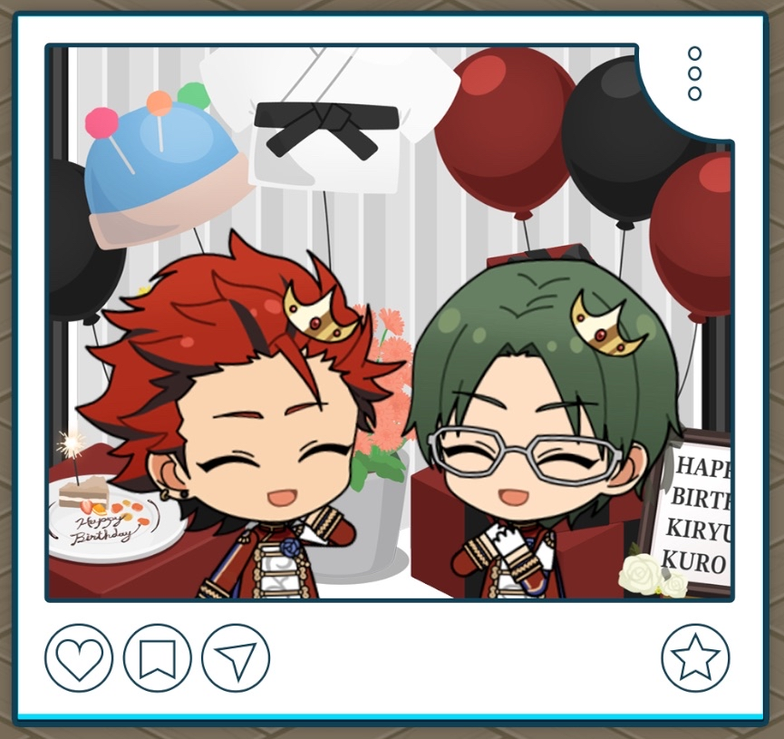
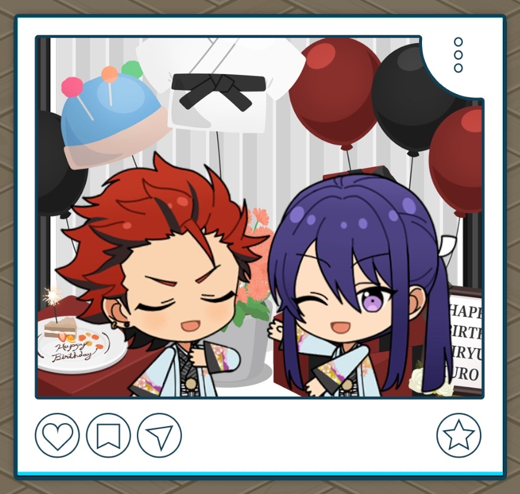
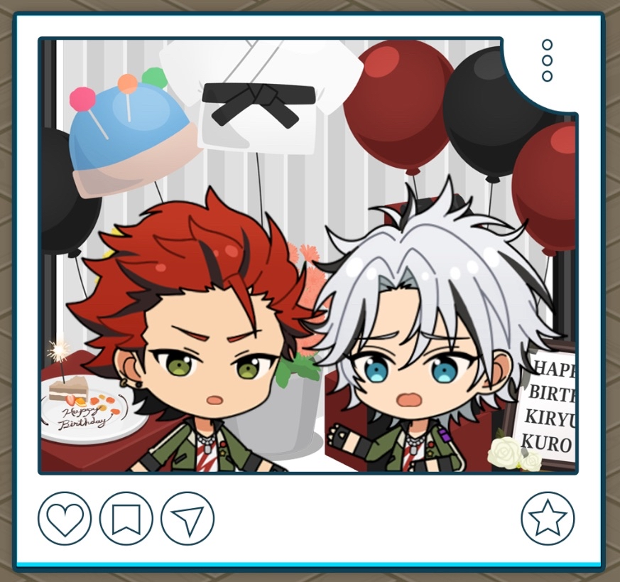
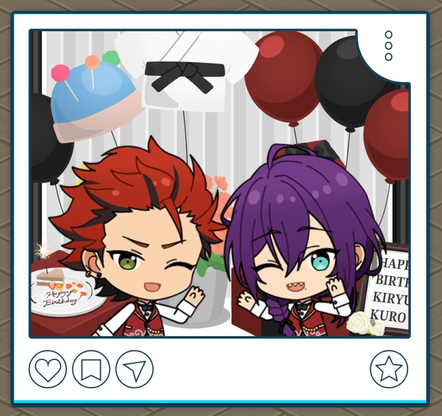

(2025) Kuro Kiryu Birthday

It feels a lil’ embarrassing gettin’ congratulated to my face, but… I’m grateful for it all the same, Lil’ Miss.
Before the Stream

Thanks for helpin’ me with the streaming set-up, Lil’ Miss. I was in a rush, so it was a big help.
I was just out eatin’ with everyone in Rhythm Link for the first time in a while. They treated me to a whole buncha meat and cake for my birthday…
I got caught up in some real good conversation, so I ended up staying late and really rushing to get here last minute.
Still, it’s thanks to those guys I’m in such a good mood. I’m gonna convey my feelin’s of gratitude to all the fans at the birthday stream today ♪
Starting the Birthday Live Stream

Yo, everyone. I’m real damn grateful you all came to my birthday stream today.
I’ve gotten more used to interactin’ with you guys on the other side of the screen. I can actually read all the comments comin’ in.
I got all kinds of things set up to make sure you all enjoy yourselves. Watch all the way ‘til the end for me, got it? ♪
Send in whatever questions and requests you got. I’m so damn grateful, I’m gonna do my best to answer as many as I can.
Now then, I'm gonna start with debutin’ some of the knitted stuff I’ve whipped up lately ♪
During the Birthday Live Stream 1
Selecting "Teach us some workouts."
Comments are just flooding in, huh. Let’s see here… “Teach us some workouts.”
It’s not that I mind, but I dunno if I do anything special like what you guys might think I do.
It’s really just about bein' consistent everyday to build a foundation for your stamina. You should start with what you can do, and then work up from there little by little.
You can start off with stuff that's manageable, like squats or goin' out on a run. I’d recommend you mix some jump rope in there too.
Hm? You want something “more serious than that,” huh? Gotcha…
Well, how about I put together a daily workout routine for you guys, then?
During the Birthday Live Stream 2
Selecting "What are you doing after this?"

Now then, onto the next question… “What are you doing after this?”
Gotcha. After the stream ends, me and all the guys in AKATSUKI are gonna go to grab somethin’ to eat.
We’ve been real damn busy with all sortsa things lately, so there hasn’t been time to meet up and hang outside of work. I've been wantin' a day like this to just decompress with ‘em.
‘Course, given I’m streamin’ right now for all my fans, you guys are my top priority
I'll keep on readin' comments, so if you got somethin' you wanna ask me, throw it in the chat ♪
Question and Answer Session
Thanks for watchin’ the stream so far. After this, we’re gonna jump right into the Q&A
Haha, everyone’s real excited, huh. Well then, let’s get started.
Guess it depends on the season, so I don’t really have one store I would answer with, but…
When I went to the mall with Isara before, he gave me a recommendation to this one store.
I liked the designs, and the way the clothes fit on me felt good, so I reckon I’ll go shop there again.
I made a flower brooch outta folded cloth, tsumami-zaiku style.1
One with chrysanthemums ‘n one with sakura blossoms… and some camelias too. I accidentally got so into it, I ended up makin’ who knows how many pieces.
I’ve got no use for ‘em, and Shino seemed like he might like ‘em, so I just gave 'em over. He was real happy about it.
Kanzaki roasted some sea bream to celebrate my birthday, so I had that.
Haha, everyone’s commentin’ stuff like, “how auspicious.”2 Yeah, it really, really was. The way it was salted was perfect, and it was damn tasty too, I tell you what.
Taki and Hasumi were real happy too, so yeah, it was just a real great way to celebrate the day before my birthday…♪
Office Conversations
| Polaroid | Office Line |
|---|---|
 | Feels like I’m uncharacteristically festive. If you are having a good time on your birthday, I’d say that’s a good thing. |
 | Our expressions came out great in the picture, huh? It is Kiryu-dono's birthday after all! |
 | I'm real happy to get your birthday wishes. I wanna wish you happy birthday as many times as I can~♪ |
 | It's rare to get a photo with you, Ayase. This is a memorable photo for me as well. |
Translation Notes
- ↑ Tsumami-zaiku is the art of folding square cloth into the shape of flowers with tweezers.
- ↑ Sea bream (鯛; tai) is said to represent prosperity and joy, as its tai sounds like the end of the word めでたい (medetai; auspiciousness). It is usually made for New Years and weddings.